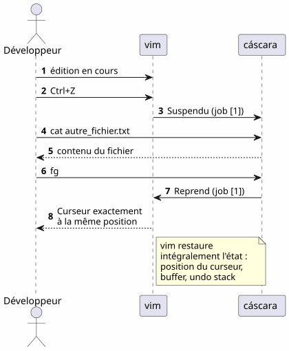
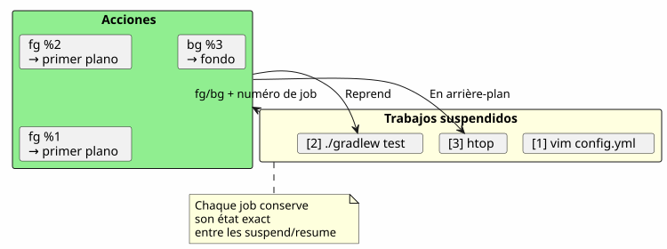
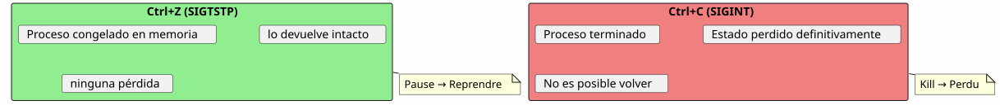
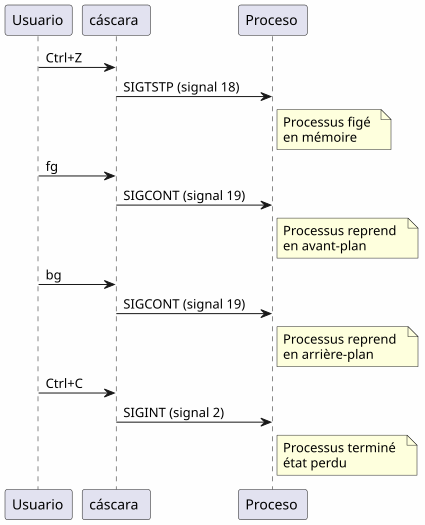

Los mejores trucos del comando fg: cuando Ctrl+Z salva tu sesión de terminal
Publié le 18 April 2026
- El problema: un terminal ocupado
- Los tres comandos indispensables
- Escenario 1: El build largo
- Escenario 2: El editor olvidado
- Escenario 3: El proceso opencode suspendido
- Escenario 4: Gestionar varios trabajos simultáneamente
- Diferencias entre fg, bg, Ctrl+Z, Ctrl+C y &
- El ciclo de vida completo de un trabajo
- Consejos avanzados
- Trampas y errores comunes
- Diagrama resumido
- ¿Por qué fg está subestimado
- Memoria técnica: las señales
- Conclusión
- Referencias
Lanzas`./gradlew build`, el terminal está bloqueado durante 3 minutos, y necesitas hacer otra cosa mientras esperas? No es necesario abrir una nueva pestaña.`Ctrl+Z`suspende el proceso,`fg`Lo lleva exactamente donde lo dejaste. Es el tip de Unix más subestimado del día a día de un desarrollador.
- tic
-
[]
El problema: un terminal ocupado
Todo desarrollador ha conhecido esta situación:
$ ./gradlew build
> Building...El terminal está bloqueado. No puedes escribir ningún comando. Y necesitas consultar un archivo, lanzar un`git status`, o comprobar un puerto ocupado.
Failed to generate image: PlantUML preprocessing failed: [From <input> (line 6) ] @startuml skinparam backgroundColor #FEFEFE actor Développeur as dev participant "Terminal" as term participant "Gradle ^^^^^ Syntax Error? (Assumed diagram type: sequence) @startuml skinparam backgroundColor #FEFEFE actor Développeur as dev participant "Terminal" as term participant "Gradle ( proceso )" as gradle dev -> term : ./gradlew build term -> gradle : Lance le build gradle -> term : Occupe le terminal\n(pas de prompt) dev -> term : veut taper une commande term --> dev : ❌ Terminal bloqué note right of dev Le développeur est paralysé pendant toute la durée du build end note @enduml
La mayoría de los desarrolladores abren una nueva terminal. Pero existe una solución más elegante, más rápida y nativa: la gestión de los trabajos.
Los tres comandos indispensables
Ctrl+Z — Suspender (SIGTSTP)
`Ctrl+Z`envía la señal`SIGTSTP`al proceso en primer plano. El proceso essuspendido— no matado — y el terminal recupera su prompt.
$ ./gradlew build
> Building...
^Z
[1]+ Stoppé ./gradlew build
$El número entre corchetes`[1]`es elnúmero de trabajo. Le `+`indica el trabajo por defecto.
fg — Traer al primer plano
`fg`Lleva el trabajo suspendido al primer plano. El proceso continúa exactamente donde se había detenido.
$ fg
./gradlew build
> Building... (reprend où il en était)Con un número de trabajo específico :
$ fg %2bg — Reanudar en segundo plano
`bg`reanuda el proceso sin bloquear el terminal. Ideal para las builds largas.
$ bg
[1]+ ./gradlew build &
$Le `&`al final significa que el proceso se ejecuta en segundo plano.
jobs — Listar los trabajos del shell
$ jobs
[1]- Stoppé vim README.md
[2]+ En cours ./gradlew buildFailed to generate image: PlantUML preprocessing failed: [From <input> (line 6) ] @startuml skinparam backgroundColor #FEFEFE skinparam defaultFontName sans-serif state "Primer plano\n(terminal bloqueado)" as fg #LightCoral state "Suspendido ^^^^^ Syntax Error? (Assumed diagram type: state) @startuml skinparam backgroundColor #FEFEFE skinparam defaultFontName sans-serif state "Primer plano\n(terminal bloqueado)" as fg #LightCoral state "Suspendido (Ctrl+Z)" as stopped #LightYellow state "Fondo\n(bg)" as bg_ #LightGreen [*] --> fg : Lance une commande fg --> stopped : Ctrl+Z\n(SIGTSTP) stopped --> fg : fg\nreprend en avant-plan stopped --> bg_ : bg\nreprend en arrière-plan bg_ --> fg : fg\nramène en avant-plan fg --> [*] : Commande terminée note right of stopped Le processus est figé mais _pas_ tué end note note left of bg_ Le terminal est libre le build continue end note @enduml
Escenario 1: El build largo
Es el caso de uso más común. Ejecutas una compilación de Gradle, el terminal queda bloqueado y necesitas hacer otra cosa.
Failed to generate image: PlantUML preprocessing failed: [From <input> (line 8) ] @startuml skinparam backgroundColor #FEFEFE autonumber actor Développeur as dev participant "Terminal" as term participant "Gradle" as gradle database "Estado ^^^^^ Syntax Error? (Assumed diagram type: sequence) @startuml skinparam backgroundColor #FEFEFE autonumber actor Développeur as dev participant "Terminal" as term participant "Gradle" as gradle database "Estado proceso" as state dev -> term : ./gradlew build term -> gradle : Lance le build gradle -> state : En cours (FG) dev -> term : Ctrl+Z term -> state : Suspendu (job [1]) term --> dev : Prompt libre $ dev -> term : git status term --> dev : working tree clean dev -> term : fg term -> state : Reprend (FG) gradle --> dev : Build réussi ✓ note right of state Le processus Gradle n'a jamais été tué Il reprend exactement où il s'était arrêté end note @enduml
Paso a paso
$ ./gradlew build
> Building...
^Z
[1]+ Stoppé ./gradlew build
$ git status
On branch main
nothing to commit, working tree clean
$ fg
./gradlew build
> Building...
BUILD SUCCESSFUL in 2m 34sEscenario 2: El editor olvidado
Estás en`vim`, necesitas consultar otro archivo sin salir`vim`.
# Dans vim, en mode commande :
:shell
$ cat /path/to/other/file.txt
$ exit
# Retour dans vimPero es pesado. Con`Ctrl+Z`, es inmediato :
# Dans vim, n'importe quel moment :
Ctrl+Z
[1]+ Stoppé vim README.md
$ cat /path/to/other/file.txt
# ... lire le fichier ...
$ fg
vim README.md
# Retour exact là où on en était, curseur en place
Escenario 3: El proceso opencode suspendido
Es el escenario que motivó este artículo. Usted utiliza`opencode`(herramienta CLI para controlar un LLM en tu código), y el proceso está suspendido.
Failed to generate image: PlantUML preprocessing failed: [From <input> (line 7) ] @startuml skinparam backgroundColor #FEFEFE skinparam defaultFontName sans-serif skinparam componentStyle rectangle actor Développeur as dev participant "opencode ^^^^^ Syntax Error? (Assumed diagram type: sequence) @startuml skinparam backgroundColor #FEFEFE skinparam defaultFontName sans-serif skinparam componentStyle rectangle actor Développeur as dev participant "opencode (LLM agente)" as agent participant "Shell" as shell participant "git" as git dev -> agent : Session active agent -> agent : Tour de parole\ndu LLM en cours note over agent Ctrl+Z arrive en plein milieu d'une analyse de code end note dev -> agent : Ctrl+Z agent -> shell : Suspendu (job [1]) dev -> git : git diff git --> dev : changements visibles dev -> shell : fg shell -> agent : Reprend (job [1]) agent --> dev : Reprend exactement\nl'analyse en cours note right of agent Aucune perte de contexte Le LLM reprend sa réponse exactement où il en était end note @enduml
$ opencode
# ... session en cours, LLM analyse le code ...
^Z
[1]+ Stoppé opencode
$ git diff HEAD~1
# vérifier les changements récents
$ fg
opencode
# Le LLM reprend là où il s'était arrêtéLa ventaja es doble:
-
Sin pérdida de contexto: la sesión LLM, el historial de conversación, los archivos abiertos — todo está preservado
-
Sin reinicio: no es necesario volver a ejecutar opencode, recargar el contexto, volver a explicar el problema al LLM
Escenario 4: Gestionar varios trabajos simultáneamente
fg et `bg`aceptan un número de trabajo para dirigirse a un proceso específico cuando varios están suspendidos.
$ vim config.yml
^Z
[1]+ Stoppé vim config.yml
$ ./gradlew test
^Z
[2]+ Stoppé ./gradlew test
$ htop
^Z
[3]+ Stoppé htop
$ jobs
[1] Stoppé vim config.yml
[2]- Stoppé ./gradlew test
[3]+ Stoppé htop
$ fg %2
./gradlew test
# Le build reprend en avant-plan
$ bg %3
[3] htop &
# htop reprend en arrière-plan
Resumen de los comandos de trabajos
| Orden | Efecto | Ejemplo |
|---|---|---|
|
Suspenda el proceso en primer plano |
Envío de`SIGTSTP` |
|
Reanuda el trabajo predeterminado en primer plano |
|
|
Reanuda el trabajo n en primer plano |
|
|
Reanuda el trabajo predeterminado en segundo plano |
|
|
Reanuda el trabajo n en segundo plano |
|
|
Enumera los trabajos del shell actual |
|
|
Termina el trabajo n |
|
Diferencias entre fg, bg, Ctrl+Z, Ctrl+C y &
Muchos desarrolladores confunden estos mecanismos. Aquí tienes una aclaración decisiva.
Failed to generate image: PlantUML preprocessing failed: [From <input> (line 10) ]
@startuml
skinparam backgroundColor #FEFEFE
skinparam defaultFontName sans-serif
rectangle "**Ctrl+Z**\nSIGTSTP" as ctrlz #LightYellow {
card "Suspende el proceso\n(todavía está en memoria)\nUtilizable con fg/bg" as c1
}
rectangle "**Ctrl+C**
SIGINT" as ctrlc #LightCoral {
^^^^^
Syntax Error? (Assumed diagram type: activity)
@startuml
skinparam backgroundColor #FEFEFE
skinparam defaultFontName sans-serif
rectangle "**Ctrl+Z**\nSIGTSTP" as ctrlz #LightYellow {
card "Suspende el proceso\n(todavía está en memoria)\nUtilizable con fg/bg" as c1
}
rectangle "**Ctrl+C**
SIGINT" as ctrlc #LightCoral {
card "Finaliza el proceso
(sin posibilidad de retorno)
Pérdida de todo el estado" as c2
}
rectangle "** & \n(fondo)" as ampersand #LightGreen {
card "Inicia directamente
en segundo plano
Terminal libre inmediatamente" as c3
}
rectangle "**fg**\n(primer plano)" as fg_ #SkyBlue {
card "Trae un trabajo
suspendido en primer plano
Terminal ocupado" as c4
}
rectangle "**bg**
(fondo)" as bg_ #Lavender {
card "Reanuda un trabajo
suspendido en segundo plano
Terminal libre" as c5
}
ctrlz -right-> fg_ : fg pour reprendre
ctrlz -right-> bg_ : bg pour continuer\nen arrière-plan
ctrlc -right-> c2 : Pas de retour\nprocessus tué
note bottom of ctrlz
Le processus est **figé**
mais **pas tué**
end note
note bottom of ampersand
Alternative : lancer
./gradlew build &
directement en arrière-plan
end note
@enduml
| Atajo/Comando | Señal | Efecto | ¿Volver atrás? |
|---|---|---|---|
|
|
Suspender el proceso (congelado, en memoria) |
Sí :`fg` ou |
|
|
Mata el proceso (terminado) |
No: proceso destruido |
|
|
Mata el proceso + core dump |
No : proceso destruido |
|
— |
Lanza en segundo plano directamente |
`fg`para llevarlo al primer plano |
Ctrl+Z`esno destructivo. El proceso está congelado tal cual, en memoria. Puede continuar inmediatamente con`fg. Es un pause, no un stop.
|
El ciclo de vida completo de un trabajo
Failed to generate image: PlantUML preprocessing failed: [From <input> (line 8) ] @startuml skinparam backgroundColor #FEFEFE skinparam defaultFontName sans-serif title Ciclo de vida completo de un trabajo shell state "Inexistente" as none state "Primer plano\n(ocupa la terminal)" as foreground #LightCoral state "Suspendido ^^^^^ Syntax Error? (Assumed diagram type: state) @startuml skinparam backgroundColor #FEFEFE skinparam defaultFontName sans-serif title Ciclo de vida completo de un trabajo shell state "Inexistente" as none state "Primer plano\n(ocupa la terminal)" as foreground #LightCoral state "Suspendido (Ctrl+Z / SIGTSTP)" as suspended #LightYellow state "Fondo (bg o &)" as background #LightGreen state "Terminado (exit code 0)" as done #LightGray [*] --> none none --> foreground : tape une commande foreground --> suspended : Ctrl+Z foreground --> done : fin normale suspended --> foreground : fg suspended --> background : bg suspended --> done : kill %n background --> foreground : fg background --> done : fin normale\n(en arrière-plan) background --> suspended : Ctrl+Z\n(si fg puis Ctrl+Z) done --> [*] note right of suspended L'état suspendu est le pivot de tout le système de jobs end note @enduml
Consejos avanzados
fg con el trabajo más reciente y la alternancia
fg`Sin argumento trae el trabajo marcado.+(el más reciente). Pero también puedes usar%-`Para apuntar al trabajo anterior
$ vim file1.txt
^Z
[1]+ Stoppé vim file1.txt
$ vim file2.txt
^Z
[2]+ Stoppé vim file2.txt
$ fg # ramène job [2] (le plus récent)
$ fg %- # ramène job [1] (le précédent)matar un trabajo de forma limpia
$ jobs
[1]- Stoppé vim config.yml
[2]+ Stoppé ./gradlew test
$ kill %2 # envoie SIGTERM au job 2
$ kill -9 %1 # envoie SIGKILL au job 1 (force)désown : desanclar del shell
disown`Elimina un trabajo de la tabla de trabajos del shell. El proceso sigue ejecutándose pero ya no puede ser recuperado con`fg :
$ ./gradlew build &
[1] 12345
$ disown %1
# Le processus continue mais n'est plus lié au shell
# Ça survives à la fermeture du terminalCombinar con nohup para procesos largos
Para que un proceso sobreviva al cierre del terminal :
$ nohup ./gradlew build &
[1] 12345
$ disown %1
# Le build continue même si vous fermez le terminalFailed to generate image: PlantUML preprocessing failed: [From <input> (line 8) ]
@startuml
skinparam backgroundColor #FEFEFE
skinparam defaultFontName sans-serif
rectangle "fg" as fg_ #SkyBlue {
card "Trae el trabajo\nel más reciente (+)" as f1
card "Apunta a un trabajo
específico : fg %n" as f2
^^^^^
Syntax Error? (Assumed diagram type: activity)
@startuml
skinparam backgroundColor #FEFEFE
skinparam defaultFontName sans-serif
rectangle "fg" as fg_ #SkyBlue {
card "Trae el trabajo\nel más reciente (+)" as f1
card "Apunta a un trabajo
específico : fg %n" as f2
card "Alterna : fg %-" as f3
}
rectangle "matar %n" as kill_ #LightCoral {
card "SIGTERM (limpio)" as k1
card "SIGKILL -9 (fuerza)" as k2
}
rectangle "renegar" as disown #Lavender {
card "Desvincular del shell
(sobrevive a la desconexión)" as d1
}
rectangle "nohup + &" as nohup_ #LightGreen {
card "Proceso inmunizado
contra SIGHUP
(sobrevive al cierre
del terminal)" as n1
}
fg_ -right-> kill_ : si faut\nterminer
kill_ -right-> disown_ : ou détacher
nohup_ -left-> fg_ : fg ramène en\navant-plan
note bottom of disown_
Après disown, fg ne peut
plus ramener le job
end note
@enduml
Trampas y errores comunes
Confundir Ctrl+Z y Ctrl+C
Es el error más frecuente.`Ctrl+C`mata el proceso.`Ctrl+Z`lo suspende. Si lo presiona`Ctrl+C`por reflejo, todo el estado se pierde — archivos abiertos, sesiones LLM, builds en curso.

Los trabajos son locales al shell
jobs, fg et `bg`solo funcionan en el shell que lanzó los procesos. Si abre un nuevo terminal, no verá los trabajos del otro.
# Terminal 1
$ vim file.txt
^Z
[1]+ Stoppé vim file.txt
# Terminal 2 (nouveau)
$ jobs
# (rien — les jobs sont locaux au shell)Para ver los procesos system-wide, utilice`ps` ou htop:
ps aux | grep vimLos trabajos no sobreviven al cierre del shell
Si cierras el terminal, todos los trabajos suspendidos o en segundo plano son destruidos. Para que un proceso sobreviva, utilice`nohup`+disown:
$ nohup ./gradlew build &
[1] 12345
$ disown %1
# Fermer le terminal → le build continueLos procesos interactivos y fg
Algunos programas interactivos no funcionan bien después de un`Ctrl+Z`+fg. Es raro pero ocurre :
-
Algunos programas que utilizan señales (vim, htop, less manejan bien`Ctrl+Z`)
-
Los programas de red de larga duración (ssh, opencode) generalmente se recuperan correctamente
-
Los programas que modifican el terminal (ncurses) pueden a veces dejar el terminal en un estado inesperado
En caso de terminal corrupto después de un`fg`, escriba :
resetDiagrama resumido
Failed to generate image: PlantUML preprocessing failed: [From <input> (line 10) ]
@startuml
skinparam backgroundColor #FEFEFE
skinparam defaultFontName sans-serif
skinparam ArrowColor #444444
title "fg — El consejo que cambia todo"
rectangle "Problema" as problem #LightCoral {
card "Terminal bloqueado
por un proceso" as p1
^^^^^
Syntax Error? (Assumed diagram type: activity)
@startuml
skinparam backgroundColor #FEFEFE
skinparam defaultFontName sans-serif
skinparam ArrowColor #444444
title "fg — El consejo que cambia todo"
rectangle "Problema" as problem #LightCoral {
card "Terminal bloqueado
por un proceso" as p1
card "Abrir un nuevo
terminal = solución pesada" as p2
}
rectangle "**Solución**" as solution #LightGreen {
card "Ctrl+Z → suspender" as s1
card "fg → retoma" as s2
card "bg → en segundo plano" as s3
card "jobs → ver los suspendidos" as s4
}
rectangle "Ventajas" as advantages #SkyBlue {
card "Sin pérdida de contexto" as a1
card "No reinicio" as a2
card "Un solo terminal basta" as a3
}
problem -right-> solution : "La solución nativa\nUnix desde hace 40 años"
solution -right-> advantages : "Resultado"
note bottom of advantages
fg n'est pas un tips obscur
C'est un mécanisme fondamental
du shell Unix
end note
@enduml
¿Por qué fg está subestimado
La mayoría de los desarrolladores modernos descubren`fg`tarde, o incluso nunca. Algunas razones :
-
Los IDE ocultan la terminal: VS Code ofrece un terminal integrado, pero las pestañas múltiples hacen`fg`menos necesario en apariencia
-
Las herramientas gráficas reemplazan a la CLI: los gestores de archivos, los monitores del sistema, los clientes gráficos de Git
-
tmux y screen: estos multiplexores resuelven el mismo problema de manera diferente, pero`fg`es más simple y siempre disponible
Pero,`fg`es :
-
universal: presente en todos los shells POSIX (bash, zsh, fish…)
-
Sin dependencia: no es necesario instalar tmux o screen
-
Instantáneo: dos golpes (
Ctrl+Z`luego`fg) para suspender y reanudar -
**Preservador de contexto
Wait that’s wrong: Should be "Preservador de contexto". Let’s output exactly that.
</think>
Preservador de contexto**: el estado del proceso está intacto
Failed to generate image: PlantUML preprocessing failed: [From <input> (line 6) ]
@startuml
skinparam backgroundColor #FEFEFE
skinparam defaultFontName sans-serif
rectangle "¿Por qué fg está
subestimado?" as why #LightCoral {
^^^^^
Syntax Error? (Assumed diagram type: activity)
@startuml
skinparam backgroundColor #FEFEFE
skinparam defaultFontName sans-serif
rectangle "¿Por qué fg está
subestimado?" as why #LightCoral {
card "IDE con terminal\nmultipestañas" as w1
card "Herramientas gráficas
que sustituyen la CLI" as w2
card "tmux/screen
resuelven el problema
de otra manera" as w3
}
rectangle "¿Por qué fg es
superior?" as superior #LightGreen {
card "Universal: bash,\nzsh, fish, sh..." as s1
card "Sin dependencia:
Sin instalación" as s2
card "Dos pulsaciones:\nCtrl+Z luego fg" as s3
card "Contexto preservado:\ncero pérdida de estado" as s4
}
why -right-> superior : "La simplicidad
siempre gana"
@enduml
Memoria técnica: las señales
Para los curiosos, aquí están las señales implicadas:
| señal | Nombre | Enviado por | Efecto |
|---|---|---|---|
2 |
|
|
Interrupción — termina el proceso |
3 |
|
|
Sale con volcado de núcleo |
18 |
|
|
Parada interactiva — suspende el proceso |
19 |
|
|
Continúa — reanuda un proceso suspendido |
15 |
|
|
terminación limpia |
9 |
|
|
Finalización forzada (imposible de interceptar) |
El flujo completo:

Conclusión
`fg`No es un consejo oscuro — es un mecanismo fundamental del shell Unix, disponible desde los años 70. El hecho de que la mayoría de los desarrolladores lo ignoren es un síntoma de nuestra época: los IDE y los multiplexores nos han alejado de lo básico.
Pero cuando estás en un servidor SSH, en una terminal mínima, o simplemente estás utilizando`opencode`y que el LLM está en pleno trabajo —Ctrl+Z, fg, bg, `jobs`son tus mejores amigos.
_ Ctrl+Z suspend, fg reanuda. Es la pausa-reproducción del terminal. _
Referencias
-
man bash— sección JOB CONTROL -
man signal— lista de las señales POSIX